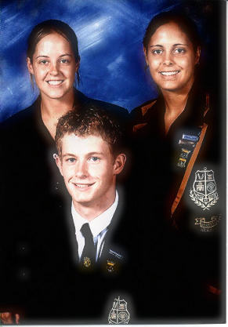
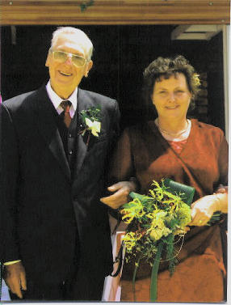
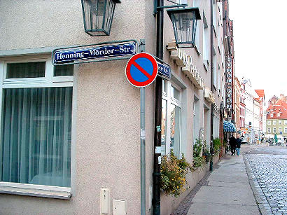
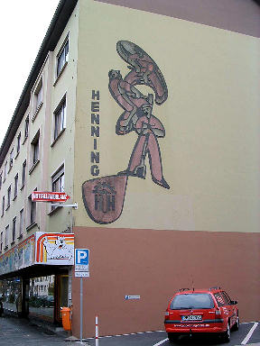
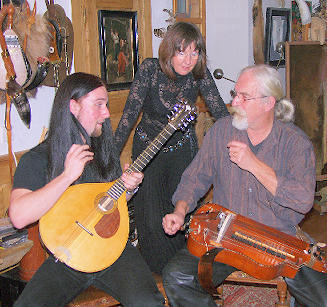

|
Indeks: |

Toe ons gedurende Oktober 1988 die eerste landwye Henning familiefees te Aliwal-Noord gehou het, het ons verneem dat daar ‘n paar maande vroeër ‘n Henning drieling in die naburige Burgersdorp gebore is — die eerste drieling in die geskiedenis van die Henning familie. Die ouerpaar — Willie en Gerda Henning (b6.c3.d2.e6.f1.g2.h1.) van die plaas Leeufontein in die distrik Burgersdorp. Lees gerus Hoofstuk 7 van die Henning Familiekroniek om te sien van watter stofasie die voorsate van hierdie familie gemaak is.
Ons was baie opgewonde om hierdie gesin te ontmoet, want ons het verneem dat hulle wel een of ander tyd by die fees teenwoordig sou wees. Willie en Gerda en hul drie babas (Hermanus Marthinus [Herman], Anelmé en Elseri)het wel hul opwagting by die fees gemaak, maar ons het nie die geleentheid gekry om hulle persoonlik te ontmoet nie.
Hierdie drie kinders het intussen groot geword en sal in 2006 in matriek wees. Dit is vir ons baie aangenaam om bekend te maak dat Anelmé aangewys is as die Hoofdogter van die Hoërskool Burgersdorp en haar broer Herman as die Onder-Hoofseun vir 2006. In die Graad 11 (ou St 9) eindeksamen het Anelmé die prys (medalje) onvang vir die eerste posisie in vyf van haar sewe vakke: Engels (eerstetaal HG), Biologie HG, Aardrykskunde HG, Rekeningkunde HG, Natuur en Skeikunde HG, en die Goue Medalje vir die eerste klasposisie. Sy het in al sewe haar vakke onderskeidings behaal. Haar suster, Elseri het ‘n sertifikaat verwerf vir haar akademiese prestasies.
Ons sal die vordering van hierdie drie kroonjuwele met belangstelling dophou.

Ons het nou al verskeie kere berig oor een van die doelwitte van die Familiebond nl om ‘n fonds op te bou waaruit beurse aan belowende Henning studente toegeken kan word. Ons het die suggestie gelaat dat Hennings gerus hierdie beursfonds kan onthou, wanneer hulle hul testament opstel — dit geld veral Hennings wat nie nasate het nie.
Ons besef terdeë dat dit baie jare kan duur om ‘n lewensvatbare fonds op te bou. Ons sal minstens R500 000.00 nodig hê, voordat die rente voldoende sal wees om beurse toe te ken. Dit blyk amper ‘n onbegonne taak te wees, maar ons gaan minstens probeer. Ons voorvaders was immers die pioniers wat hierdie land uit niks opgebou het, en ons gaan sekerlik probeer om nie slegter as hulle te vaar nie. Hoe meer Hennings betrokke raak — selfs met klein bydraes — hoe gouer gaan ons hierdie doelwit bereik.
In die Mei 2005 Haantjie het ons berig oor die egpaar, Herbert en Margita Henning van München in Duitsland. Hulle is ‘n bejaarde kinderlose egpaar wat aangedui het dat hulle eerder, terwyl hulle nog lewe, by ons beursskema betrokke sal wil raak en ‘n Henning student met sy/haar studies bystaan.
Ons het Henning studente in die Mei 2005 Haantjie uitgenooi om vir hierdie hulp aansoek te doen. Verskeie persone het aansoek gedoen — almal met groot meriete!! Die wysheid van Salomo was nodig om uiteindelik by ‘n persoon met meriete uit te kom, met wie Herbert en Margita ook ‘n verhouding kan opbou. Daar was soveel faktore wat in ag geneem moes word — te veel om op te noem.
Herbert en Margita het uiteindelik, na maande se oorweging, besluit om Anelmé Henning, een van die drieling van Burgersdorp vanaf 2007 met haar studies by te staan. Anelmé beplan om aan die Universiteit van die Vrystaat in die Handelswetenskappe te gaan studeer.
Dit is sekerlik een van die grootste mylpale wat ons Familiebond bereik het en ons is baie dank aan Herbert en Margita verskuldig. Hulle het Bondsekretaris Olivier Henning versoek om persoonlik by die kontrole oor die “beurs” betrokke te wees.
Olivier Henning en sy vrou Charlotte vergesel gedurende die naweek van 4/5 Februarie 2006 vir Herbert en Margita om die Burgersdorp Hennings te ontmoet. Ons sal in die volgende uitgawe van Ons Haantjie meer oor hierdie besoek berig.

Geen familiebond kan bly voortbestaan sonder fondse nie. Ons is dus verplig om maar voortdurend ‘n beroep op alle Hennings te doen om van tyd tot tyd ‘n bydrae aan die Familiebond te maak. Dit is vir ons aangenaam om te berig dat die meerderheid lede gehoor gee aan hierdie versoek.
Ons besef dat alle Hennings nie finansieël ewe sterk is nie — daarom wil ons nie voorskriftelik wees oor hoeveel u moet bydrae nie. U besluit self of u in staat is om R10.00 per jaar by te dra en of u R1 000.00, of watter bedrag ookal, wil bydra. Alle bedryfsuitgawes word uit die ledegelde gedek en surplusfondse word in die Familiebond se reserwefonds gestort. Hierdie reserwefonds dien ook as die begin van die beursfonds wat ons probeer opbou.
As riglyn meld ons graag dat lede tans tussen R60.00 en R300.00 per jaar bydra, met R100.00 die mees gewilde bedrag — hoewel al hoe meer lede groter bedrae begin bydra. Met die aanvang van die nuwe jaar, vermeld ons graag die name van alle lede wat sedert November 2005 donasies van R200.00 en meer aan ons gestuur het:
Jan Andries Henning en sy vrou Cornelia van Leraatsfontein — R300.00
Oom Nicolaas Henning van Garsfontein, wat ‘n Erelid van die Familiebond is — R200.00
Mev Wiena Wilkinson (gebore Henning) en haar man Aubrey van Paarl — R200.00
Mev Memory Wagenaar (gebore Henning) en haar man Noël van Maclear — R200.00
Mev Levien Endrejat (gebore Henning) en haar man Erich van Oos-Rand — R200.00
Leon Henning en sy vrou Hetta van Drieriviere, Vereeniging — R200.00
Nico Henning en sy vrou Marita van Lynnwoodrif — R200.00
Andries Kruger en sy vrou Truidie van Barberton — R200.00
Ons vind nog steeds dat daar lede is wat hul bydraes direk in die Familiebond se bankrekening deponeer sonder om enige verwysing te verstrek. So het iemand op 31 Oktober 2005 per Internetbetaling R200.00 in die Familiebond se rekening gedeponeer sonder om vir ons ‘n aanduiding te gee wie hy of sy is. Ons versoek maar weer dat u asseblief vir ons u lidnommer moet verstrek (soos aangedui op u lidmaatskap sertifikaat, of op die ledegeld kennisgewing) of minstens u voorletters, van en adres.
Ons meld ook graag dat al hoe meer lede gehoor gee aan ons versoek om maandeliks per debietorder ‘n klein bedraggie (van selfs so min as R20.00) na die Familiebond se rekening oor te plaas. Later vergeet u selfs van hierdie klein bedraggie en voel dit nie eens meer nie, maar vir die Familiebond is dit van groot waarde. Tans is die mees gewilde bedrag, R50.00 per maand. Die nodige reëlings vir so ‘n debietorder kan met u bank getref word.
Die Familiebond se bankbesonderhede is as volg:
ABSA Bank Villiersdorp; Takno 334-612; Rekening naam: Henning Familiebond; Rekeningno 2890 610 423

Waar mens navorsing oor die geskiedenis van ‘n familie doen, kom mens van tyd tot tyd af op brokkies inligting wat opsigself nie in die kroniek opgeneem kan word nie, maar wat tog interessante leesstof uitmaak.
So is ‘n groot hoeveelheid briewe wat gewone burgers tussen die jare 1829 en 1849 aan die Voortrekker owerhede gerig het, as Voortrekker Argiefstukke in die Transvaalse Argief opgeneem. Dit verg intensiewe konsentrasie om die strekking van meeste briewe te volg, of enige name raak te sien. Al hierdie briewe is in die taal van destyds —Afrikaanswordende Nederlands — geskryf. Baie van die terme wat gebruik is, het vandag ‘n ander betekenis, bv. die woord “Emigrant” is deur ‘n briefskrywer gebruik om ‘n burger van die (toekomstige) ZAR (Zuid-Afrikaansche Republiek) aan te dui.
In ‘n brief gedateer 17 September 1849 aan die President van die Volksraad, A W J (Andries) Pretorius (van Bloedrivier faam) het ‘n persoon onder die skuilnaam “Een waaren en waarachtige Emigrant” van die distrik Vaalrivier (wat die latere Potchefstroom insluit), Landdros Lombaard verkla omdat hy (na die mening van die briefskrywer) bevooroordeeld, onregverdig en onbevoeg was. Hy gebruik verskeie voorbeelde om sy bewerings te staaf. Hy voer ook aan dat Lombaard nie die saak van die nuwe Republiek bevorder nie, maar in die hande speel van die Britse regering.
Een van die voorbeelde wat die briefskrywer gebruik raak een van ons Henning pioniers, b5.c2. Pieter Hendrik Henning *8-9-1804.
‘n Persoon, Coenraad Bezuidenhout het deur middel van sy Veldkornet (Thomas Dreyer) aansoek by Landdros Lombaard gedoen dat ‘n sekere plaas aan hom toegeken moes word. Hierdie plaas het vroeër aan swart mense behoort, maar hulle het dit etlike jare vroeër reeds ontruim. Die plaas is toe aan Bekker toegeken. Bekker het egter twee jaar vroeër weer na die Kolonie teruggekeer.
Lombaard het Bezuidenhout meegedeel dat hy na die plaas kan trek, maar geen groot verbeterings of koste mag aangaan nie, omdat die eienaar in die Kolonie is.
Vyftien dae later kom Pieter Hendrik Henning en Landdros Lombaard verkwansel die plaas aan hom vir twaalf osse.
Ons haal die oorspronklike teks graag aan, sodat ons lesers ‘n beter beeld kan kry van die situasie: Nu ben my vraag: hoe heeft Lombart onlangs Coenderaad Bezuidenhout behandeld? Bezuidenhout laat door den Velcornet Thomas Dreyer verzoeken om een plaats daar de kaffers van vertrokken ben en het welke opgeteekend was voor Bekker, maar het is bykans twee jaren dat Bekker de Emigranten verlaten heeft en is na de Coloonie vertrokken. Wel, wat was het antwoord van Lombard aan Bezuidenhout? Dat hy daarop kan trekken maar geen groote kosten te doen om reede dat de bezitter van het plaats in de Colonie ben. Wel, wat doet Lombart? Binnen de 15 dagen kwam P. Henning om hetzelfde plaats en Lombart verhandeld hetzelfde aan P Henning voor 12 ossen. Wel, als hier iemand ben die de Emigranten al 2 jaren verlaten heeft en ben na de Coloonie vertrokken, heeft hy hier noch regten op grond en alwaar nog geen handwerk op gedaan ben, en Lombart laat het regt hetzelfde te verhandelen, waarom niet aan Bezuidenhout terwyl Bezuidenhout het eerste aanspraak maakte? Wel Edele Heeren, tot myn leedweezen moet ik zeggen dat Lombart een partydige regter is, en ik ben zeer verwondert dat zoo een man als Lombart als regter in het Emigranten hof kan ageeren, daar hy met het Brittische Gouvernement te zamen den heer A W J Pretorius zyn ………… ...
Ongelukkig word die naam van die plaas nie verstrek nie.
b5.c2. Pieter Hendrik Henning *8-9-1804 en sy gesin het aanvanklik op die plaas De Put in die Wyk Brakrivier, in die distrik Somerset (in lyn tussen Middelburg, Kaap en Hofmeyr) geboer. Sy vrou, Elsa (wat ook sy niggie was) word tydens die sesde Xhosa-oorlog op hul plaas vermoor. Sy was die eerste Henning wat geweldadig in Suid-Afrika gesterf het. Pieter word met vyf klein kindertjies (die een ‘n pasgebore babatjie) gelaat. Tien maande later trou hy weer met Aletta De Bruyn en hy en sy gesin vertrek, as deel van die Groot Trek, na die binneland van Suid-Afrika. Hulle volg in die voetspore van die Andries Hendrik Potgieter trek na Potchefstroom. Dit is bekend dat hy die plaas Matjesspruit in die Potchefstroom distrik besit het. Sy tweede vrou se pa, Pieter Frederik De Bruyn, het aan die slag van Bloedrivier deelgeneem.


b1.c3.d2.e2.f2.g1. Jan Hendrik Henning *3-2-1922 het vir baie jare lank met groot onderskeiding en met liefde op die eerste bestuur van die Familiebond gedien (1984 tot 1997). Weens die feit dat hy ouer as 80 jaar is, is hy tans ‘n Erelid van die Familiebond.
Oom Jan se eggenote, Sarie is gedurende 2002 oorlede. Oom Jan het sedertdien alleen gewoon. Gedurende Februarie 2005 is daar ontdek dat ‘n gewas in sy brein ontwikkel het. Die gewas is so ineengestrengel met die senuwees, dat dit nie verwyder kan word nie. Dit tas egter sy oë, spraak en gehoor aan en hy ontvang tans bestraling.
Ten spyte hiervan bly oom Jan positief en is hy dankbaar vir elke dag wat hy langer gespaar word. Hy het egter besef dat hy nie alleen die mas sal opkom nie.
Oom Jan het Gerritje (Gerry) van der Smit, ‘n verpleegster, gevra of sy nie bereid sou wees om hom te kom versorg nie, en sy het ingewillig. Gerry se ouers het gedurende Oktober 1975 vanaf Nederland na Suid-Afrika geëmigreer en was die afgelope 16 jaar oom Jan se bure, met Gerry wat by haar ouers gewoon het. Gedurende die laaste 10 weke van tant Sarie se lewe, het Gerry oom Jan bygestaan om tant Sarie te versorg.
Gedurende Desember 2004 besluit Gerry om na Nederland terug te keer, maar toe oom Jan gedurende Mei 2005 ‘n dringende boodskap na haar stuur, waarin hy vra of sy nie bereid sou wees om hom te kom versorg nie, het Gerry onmiddelik ingewillig en na Suid-Afrika teruggekeer.
Sy het hierdie taak met soveel liefde, toewyding en deernis gedoen dat oom Jan haar gedurende Desember 2005 gevra het of sy nie met hom sal trou nie. Sy het ingewillig en hulle is op 3 Desember 2005 getroud.
Gerritje van der Smit *20-6-1949 se pa is die neef van tannie Albertina Henning (gebore van der Smit), weduwee van wyle b1.c3.d10.e10.f4. Henning Willem Jacobus Henning *18-3-1912 van die Sederberg Aftree-oord in Pretoria.
Ons wil vir oom Jan en Gerry baie gelukkige dae toewens, so lank as wat dit vir hulle beskore is.

 |
 |
Henning-Moordenaar-str in Stralsund, in die Noorde van Duitsland. Dit sal interessant wees om die oorsprong van hierdie straatnaam na te vors. Stralsund lê aan die Baltiese see en die omgewing staan bekend as die bebied waar die naam Henning in die jaar 1290 sy ontstaan gehad het.
By die Paderborn stasie vind ons hierdie Henning uithangbord. Paderborn is 'n buurdorp van Lippstadt, van waar ons Henning stamvader, Pieter Hendrik Henning gekom het.

In sy reeks oor name met ‘n Bybelse oorsprong wat oor eeue heen deur die Henning familie gebruik is, behandel Past Bjarne Fowels-Landmark van Hjelmeland, Noorweë, wat self ‘n Henning nasaat is, die naam Daniël:
DANIEL means God (El) is my judge.
Daniel was a pious, skilful Jewish boy. His family background is unknown, but he could have been of the upper class. This name will bring us “By the rivers of Babylon”. In 605 BC King Nebuchadnezzar sent a group of Jews in exile to Babylon, today Iraq, during the first deportation of intellectuals. Daniel was one of them. Along with 3 friends he was appointed to be educated in the king’s service. Daniel was given the Babylonian name Belteshazzar. He refused to eat the king’s food, and he and his friends became vegetarians. Nevertheless they looked better than those who ate at the king’s table. The king discovered that Daniel and his friends were 10 times wiser than the necromancers and sign interpreters in the kingdom. Daniel could interpret visions and dreams. After 3 years of service at Court, King Nebuchadnezzar had a dream. He had forgotten its content. The king commanded all wise men in the kingdom to interpret this dream, or else they would be exterminated. Nobody was able to solve the task. All the wise men of Babylon were therefore killed. The only person who was able to interpret the dream was Daniel. After having prayed to God, he revealed and interpreted the king’s dream. Daniel told the king his dream was about 4 great kingdoms. All 4 would disappear, but the kingdom of God shall always remain. In gratitude the king rewarded Daniel richly with gifts and made him ruler over the province of Babylon and chief of the governors over all the wise men of Babylon.
Later a conflict arose between Nebuchadnezzar and Daniel’s 3 friends. Nebuchadnezzar ordered all to worship an image of gold he had got made, or be cast into a burning furnace. Daniel’s friends refused to worship and were thrown in the burning furnace. To the king’s astonishment they were unhurt. He glorified God and prohibited all to mock him. The 3 men were promoted.
Seemingly Daniel lost his high position after King Nebuchadnezzar’s death. He then lived in seclusion until King Belhazzar’s time. In 554 B.C. Daniel had a strange vision, and 2 years later another one, revealing to him the future of the mightiest kingdoms and their relationship to God’s kingdom that they finally all would serve and obey. Daniel interpreted King Belhazzar’s dream about the scripture upon the plaster of the wall. Therefore the king made him the third highest ruler in the kingdom.
The Median Darius became Babylon’s next ruler and chose 120 princes and 3 presidents, of whom Daniel was number one.
Many prominent people now started to get envious. They persuaded Daniel to establish a decree that all in his empire in the next 30 days had to pray only to the present king. Otherwise they would be thrown into the den of lions. Daniel, however, continued to pray to God 3 times daily as usual. Those who envied him therefore accused him of violation of the law. The king reluctantly had to let Daniel be thrown into the den of the lions. The next day the king, to his great joy, found him unhurt. Daniel was immediately taken out of the den, and those who accused him, plus their children and wives, were thrown into the den of lions. The lions killed them all before they reached the bottom of the den.
Darius now ordered all his subjects to fear and honour Daniel’s God. Daniel prospered in power and dignity. Under King Cyrus Daniel to his great pleasure experienced to see his people returning to their homeland. Daniel also had several visions about the future of the Jews. These visions comforted him, also regarding his own future.
The Book of Daniel is partly written in Aramaic. Daniel’s story has been told from generation to generation as a thrilling story of a brave man who lived close to God. No wonder the name Daniel became a common boy’s name in Europe from ca. 1300. Many of the Henning family have chosen this Christian name.
B. Fowels-Landmark.

Ons het met leedwese kennis geneem van die afsterwe van die volgende Hennings:
b5.c4.d3.e2.f1.g4. Stephanus Gerhardus Henning *21-4-1935 van Klerksdorp is op 28 Augustus 2005 oorlede as gevolg van pankreaskanker.b6.c4.d1.e5.f2.g6. Jan Sarel Marthinus Henning *14-9-1925 van Potchefstroom is op 26 Desember 2005 oorlede.
Ons ontvang dikwels briewe per E-Pos van buitelanders wat die Henning webwerf op Internet besoek het en dan verdere navraag wil doen. Twee persone wat onlangs met ons in verbinding was, het as volg geskryf:
ich suche weitere Henning-Familie-nangehörige. I am living in Bremen, Germany. Please write to me. My English is not so good, but I will try it.
Many greetings from Susanne Henning
Nadat ons haar geantwoord het, het sy as volg gereageer:
dear Olivier,
many thanks for your letter. My English is not so good. But next week I will buy a lexicon (?) and then I will try, to send you a answer.
But first, I am living with my husband Kurt Henning in Bremen. Kurt is coming from Danzig 1945, after the 2. war. then he lives 3 years in Kopenhagen and in Aalborg in Danmark. Danzig is today in Polland. We have 5 childs an their name also is HENNING
Many greetings from germany, I wish you and your famely a very good 2006!
Die tweede persoon, George Henning het vanuit die VSA geskryf, maar het nog sterk bande met Duitsland.
I have been trying to find out to which v.Henning Clan we belong. An American. Grandfather Karl v.Henning came to America after battle of Königkratz and (artillery officer) was employed as Cartographer by the U.S.Army (Capt.) He married a Henrietta Wollenburg (geb.ort unknown). H.v.Karnin? I would be very greatful for further information.
Nadat ons hom geantwoord het, het hy as volg terug laat weet:
Thank you eversomuch for your com. of the 5th Instant. It has helped me a great deal in locating my roots...in Europe. Even my American traces are very scarce, though I know a few. The most helpful was the connection to Stralshund which I intend to further seek our relations-lots of Hennings in the area. In the near future I will send you a mail package with a few photographs and what information I have from my family. I expect that the "v," and the "s" were dropped from the enrollment wherever my grandfather and mother arrived in the US. These remain on my own birth documents. I did check the Carl H. route on the Panel 190 Immigrant Wall but to no avail. I had persued various ships´registers with K or Carl v. H. and Henrietta Wollenberg. The "Verwaltung" in Stralshund have said they might have information about marriages and persons leaving for America after 1867... This is a great link for me for I have checked alot of ships but none leaving from Stralshund nor Stettin, where I now believe they may have sailed from. Most interesting was the description of the various Henning Coats of Arms (Wappen). I was told ours was a bird- either Cock or Greif;however I saw as a child a picture looking like a common chicken on a log which corresponds to your information of the Courland Clan. I myself was the soldier who "lived to run away, and fight another day" much like chickens do. I´ve been shot at alot in my life-hit a few times- but still here......looking for the rest of the story.

I will send as much information as I have with some photographs...perhaps someone will say - hey, he looks like my father or grandfather?? I have a link to the following from my own notes: 1st, a Major v. Henning from a Minnesota CavelaryRegiment(USA) ref. www.eschade.de/ritterburg.html. I was not able to get more information... however, there is a Henning Minnesota with just a non informative homepage. Was not our Carl or Karl I suppose. I have an Albert v.H. auf(on)Stremlow and Herman v.H. on Techlin (Silesia-Germany). Anyway they all seem to be in the same area. I will try to find some more tracks contacting the local books of Demmin, and areas nearby, though they are scarce. I do have further, a George Fr.v.Henning who sold his farm "Odsen" 1772. and a Wilhelm v.Henning(s) who bought the property "Turkaln"-wherever this was, in 1793 but lost it a few years later- so I guess these Hennings had problems with keeping their farms. All these local official departments and churches have lost most of their books during the WW 2, Russian occupation and prescence of the East German government after that time. I´ll keep trying.
Is there a normal mail address where I can send things to?
With best thanks and looking forward to hearing from you again,
Sincerely, George v.Henning

Waar die naam Henning sy oorsprong het in ‘n jong, astrante kapokhaantjie, het ons besluit om met ‘n teelprogram te begin om haantjies te teel, waarmee ons alle ander hane onder die stof sal loop. Hoe lyk dit vir “size!”